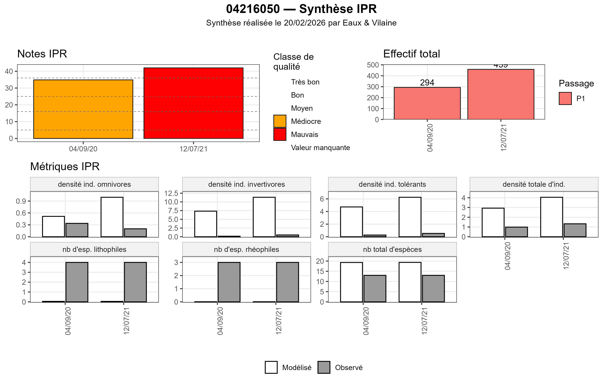
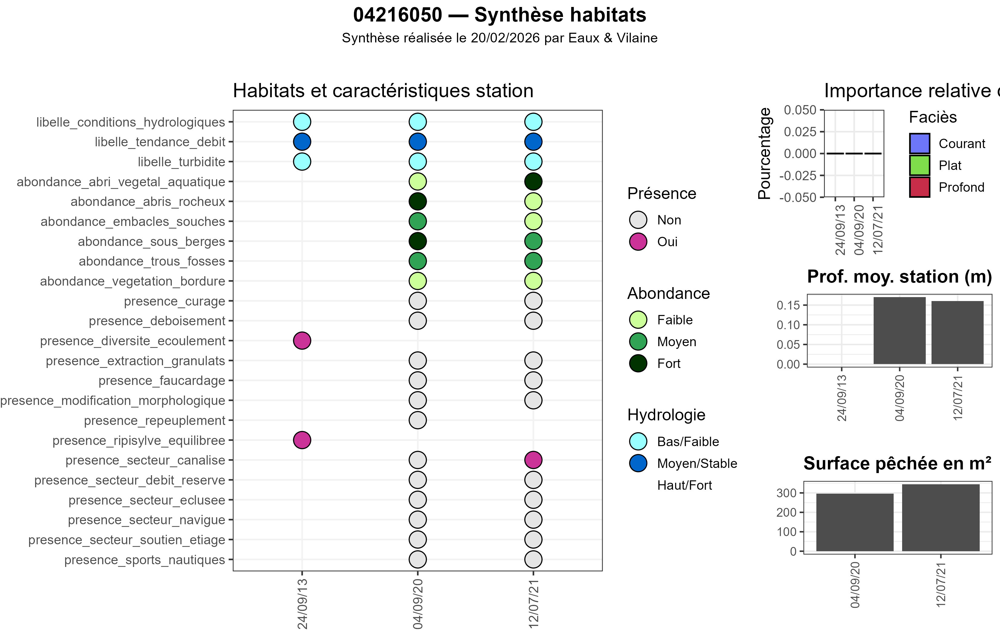
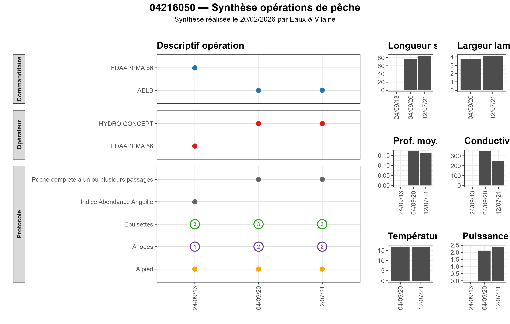
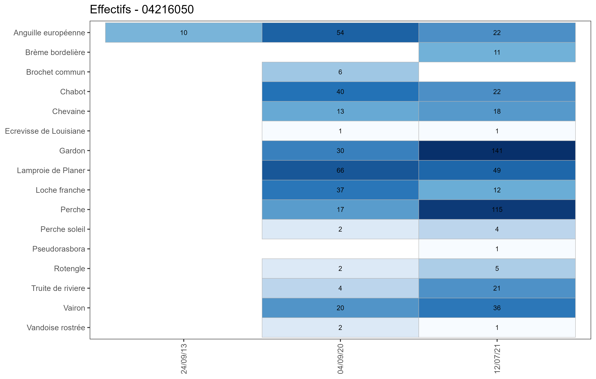
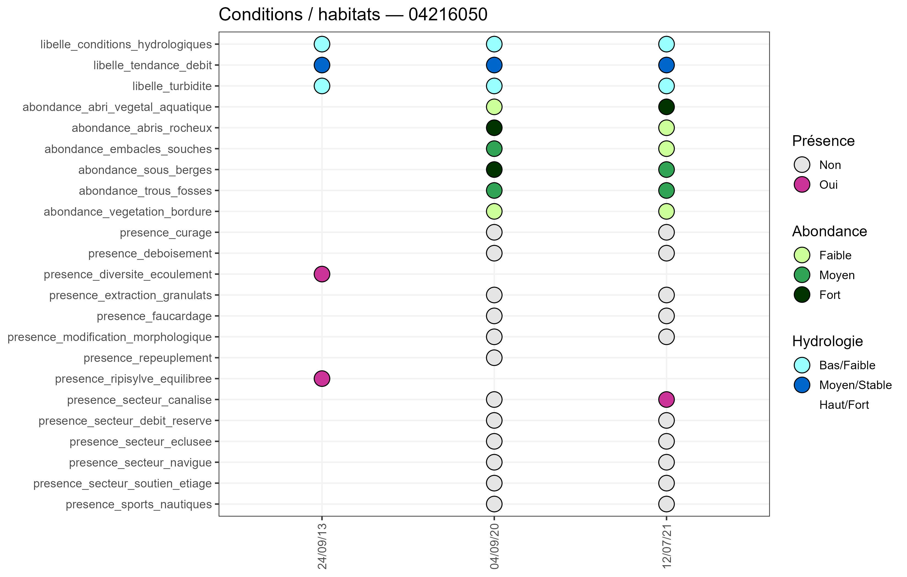
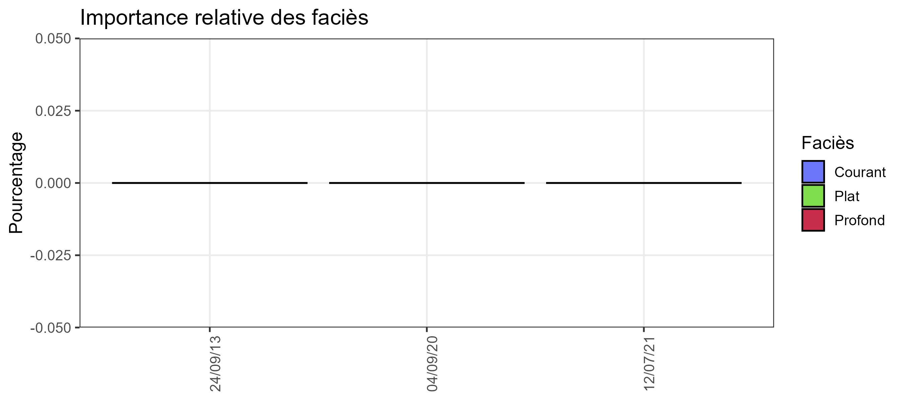
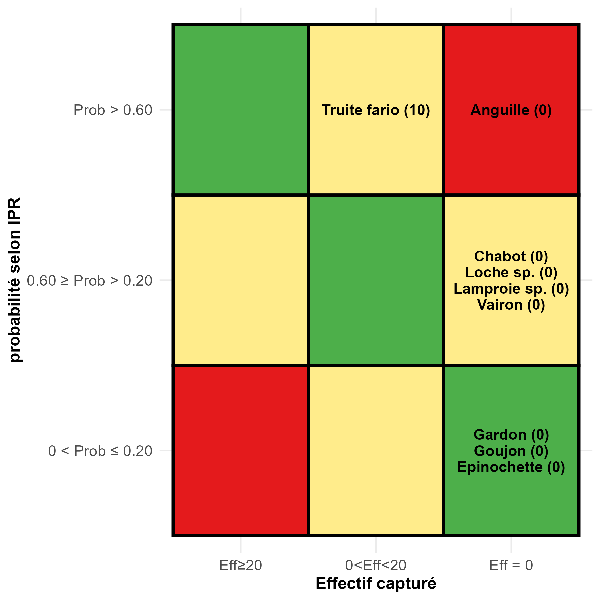
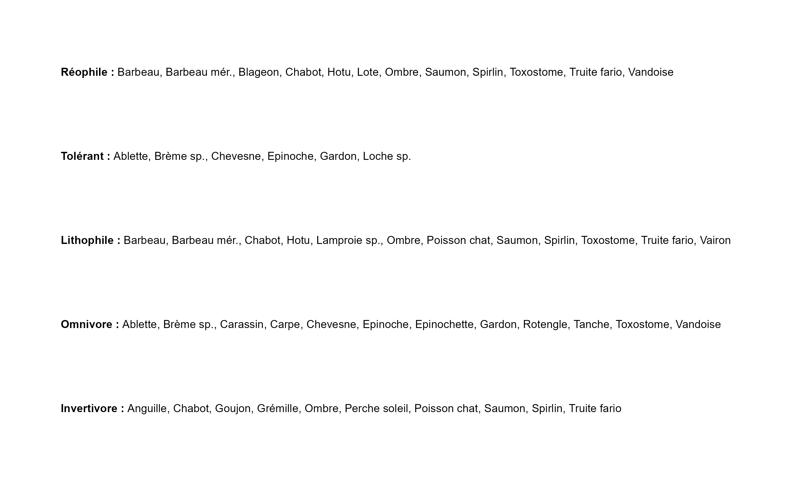

valorisationPoissons — Illustrations et usages
Eaux & Vilaine
13/05/2026
Source:vignettes/valorisationPoissons_RPubs.Rmd
valorisationPoissons_RPubs.Rmd1. Introduction
Le package valorisationPoissons fournit
un ensemble de fonctions permettant :
- d’extraire et structurer les données issues de la base
nationale ASPE,
- de produire des visualisations standardisées pour
l’analyse piscicole,
- d’assembler automatiquement des planches thématiques (IPR, habitats, opérations, etc.).
Les illustrations présentées dans ce document ont été générées à partir de données ASPE réelles, via les fonctions du package, puis enregistrées sous forme d’images afin de produire cette version entièrement hors‑ligne de la vignette.
2. Planche IPR — Synthèse des dernières opérations
Fonction clé :make_ipr_planche()
→ assemble :
- histogramme IPR,
- histogramme des effectifs,
- métriques IPR observé vs modélisé.
show_img("planche_ipr.png")
3. Planche Habitats
Fonction :make_habitats_peche_planche()
→ inclut :
- heatmap des caractéristiques station (présence, abondance,
hydrologie),
- faciès,
- profondeur,
- surface pêchée.
show_img("planche_habitats.png")
# 4. Planche OpérationsFonction :make_operations_peche_planche()
→ visualise :
- commanditaires / opérateurs,
- protocoles & prospection,
- matériels (anodes & épuisettes),
- conditions de pêche.
show_img("planche_operations.png")
5. Heatmap Faunistique (néotaxons IPR)
Fonction :plot_faune_heatmap()
→ regroupe les taxons selon les règles IPR,
→ dédoublonnage par code lot,
→ affichage en log10 avec effectifs en clair.
show_img("heatmap_faune.png")
6. Heatmap Habitats détaillée
Fonction :plot_habitat_heatmap()
→ présence (presence_*),
→ abondance (abondance_*),
→ hydrologie (libelle_conditions_hydrologiques, etc.)
show_img("heatmap_habitat.png")
7. Conditions environnementales — Histogrammes
Fonctions dédiées :
- plot_profondeur_histogram()
- plot_surface_pechee_histogram()
- plot_longueur_pechee_histogram()
- plot_largeur_lame_eau_pechee_histogram()
- plot_conductivite_pechee_histogram()
- plot_temperature_instantanee_pechee_histogram()
- plot_puissance_pechee_histogram()
show_img(c(
"hist_profondeur.png",
"hist_surface.png",
"hist_longueur.png",
"hist_largeur.png",
"hist_conductivite.png",
"hist_temperature.png",
"hist_puissance.png"
))


8. Faciès — Importance relative
Fonction : plot_facies_importance()
show_img("hist_facies_importance.png")
9. IPR 3×3 — Attendu vs Observé (par opération)
Fonction : ipr_heatmap_3x3()
show_img("ipr_3x3.png")
10. Planche multi‑opérations IPR
Fonction :make_analyse_pop_IPR_planche()
→ assemble les matrices 3×3 des dernières opérations.
show_img("planche_ipr_multi.png")11. Guildes écologiques — Espèces contributives IPR
Fonction :graph_modalites_ipr()
→ répartition des taxons IPR dans les cinq guildes (réophile,
lithophile, invertivore, omnivore, tolérant).
show_img("ipr_guildes.png")
12. Conclusion
Cette vignette illustre les principaux résultats obtenus grâce aux
fonctions du package valorisationPoissons,
appliquées aux données issues de la base nationale
ASPE.
Les images permettent d’exposer de manière synthétique la richesse des
sorties possibles :
IPR, habitats, faciès, opérations, conditions environnementales, faune,
et guildes écologiques.